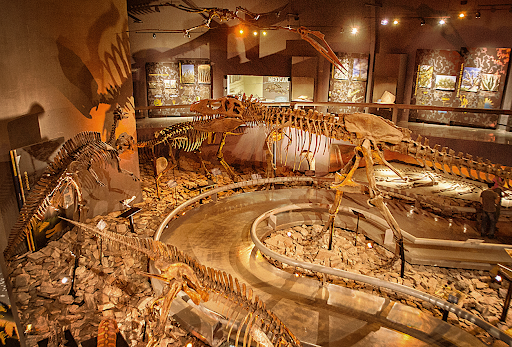
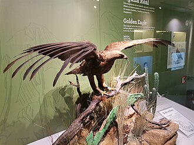
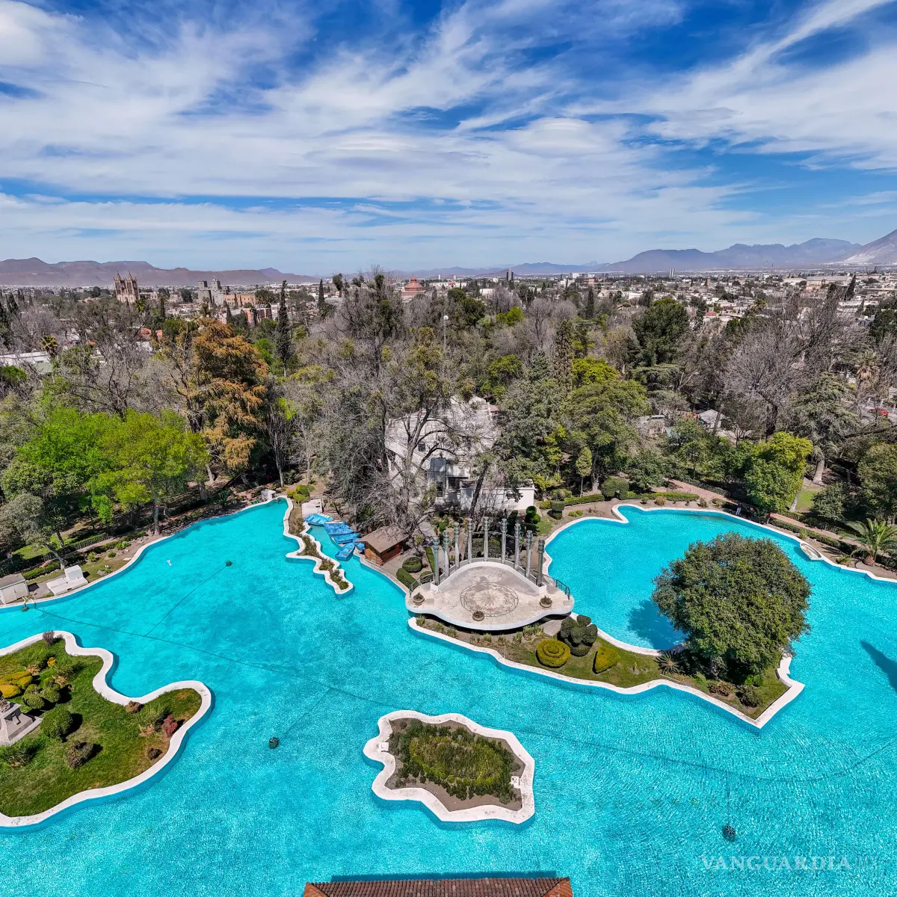

Lugares turisticos en Saltillo
| Sitios emblematicos que debes conocer | |
|---|---|
Museo del DesiertoEs el rey de los museos en el norte del país. Combina la imponente era de los dinosaurios con un zoológico viviente que resguarda osos negros, lobos grises y perritos de la pradera. Es interactivo, moderno y fascinante tanto para niños como para adultos.  |
Catedral de SantiagoUna joya arquitectónica del barroco. Su fachada labrada en cantera rosa y su imponente torre dominan la Plaza de Armas. Por dentro, su altar y obras de arte sacro te transportan directo a la época virreinal. |
Museo de las aves de MexicoUbicado en un bellísimo edificio antiguo que fue un colegio jesuita. Sorprende a todos porque alberga una colección impresionante que representa más del 70% de las especies de aves que habitan en todo el país.  |
Alameda ZaragozaEl oasis verde del centro de la ciudad, ideal para caminar bajo la sombra de árboles centenarios. Su mayor curiosidad es el Lago de la República, un lago artificial diseñado con la forma exacta del mapa de México, donde puedes rentar lanchitas de pedales.  |